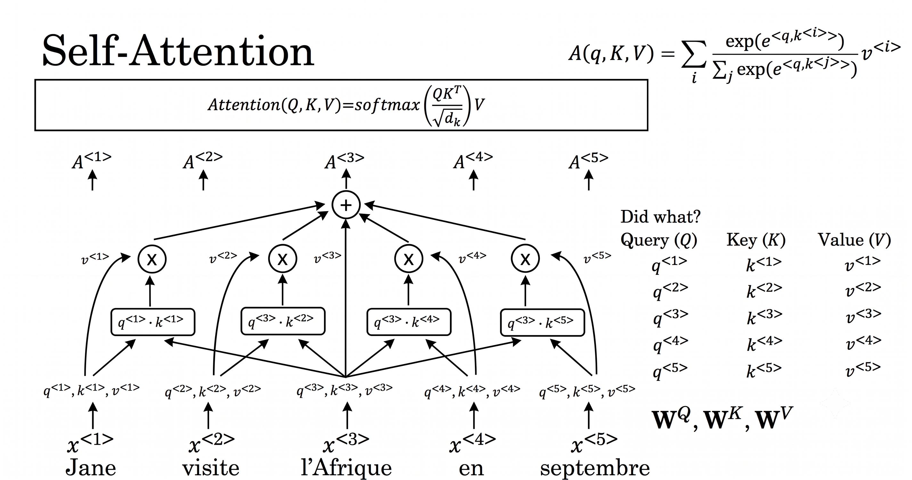
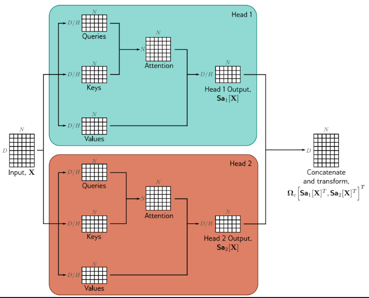
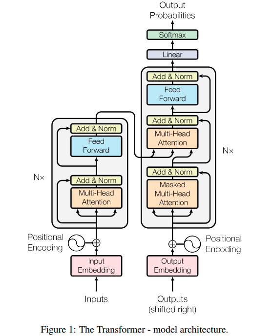
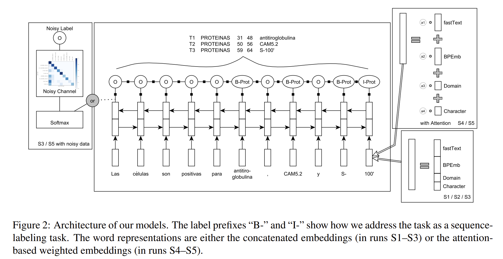

Cộng trực tiếp vào embedding: X′ = X + PE. Nhờ tính cộng góc sin/cos, dễ suy ra quan hệ tương đối & ngoại suy tốt với chuỗi dài hơn.
Học vector vị trí tuyệt đối như tham số tự do (BERT/GPT ban đầu). Linh hoạt, tự tối ưu theo dữ liệu nhưng không ngoại suy được khi chuỗi vượt Nmax.
Mã hoá khoảng cách tương đối qua phép xoay vector trong không gian số phức. Tổng quát hoá tốt với chuỗi dài — dùng trong LLaMA, GPT-NeoX.
Bao bọc bởi kết nối tắt (Residual Connection) và chuẩn hoá tầng (Layer Normalization):
Hai tầng tuyến tính kết hợp hàm kích hoạt phi tuyến (ReLU/GELU), áp dụng độc lập cho từng vị trí token:

Phù hợp seq2seq (dịch máy, tóm tắt). Encoder dùng bidirectional attention; Decoder dùng causal masking + cross-attention với đầu ra Encoder.
Bidirectional attention toàn phần — tối ưu cho hiểu ngôn ngữ, phân loại, gán nhãn chuỗi (NER/POS).
Chỉ dùng causal self-attention (mặt nạ tam giác dưới) — tối ưu cho sinh văn bản tự hồi quy.
Char-level BiLSTM (50d) + fastText chung tiếng Tây Ban Nha (100d) + fastText miền SciELO (100d) + BPEmb subword (300d, vocab 200k) — không cần fine-tune embedding gốc.
Tự động cân nhắc trọng số cho từng nguồn embedding dựa trên đặc trưng từ f (POS, độ dài, tần suất, hình thái từ).
Distant supervision từ SciELO & Wikidata; ma trận nhầm lẫn (confusion matrix) khởi tạo Noisy Channel; huấn luyện xen kẽ dữ liệu sạch/nhiễu, giảm dần 5% câu nhiễu mỗi epoch.

| Mô hình (Run ID) | Dev — Precision | Dev — Recall | Dev — F1 | Test — Precision | Test — Recall | Test — F1 |
|---|---|---|---|---|---|---|
| S1: Base (General Embeddings) | 86.3 | 85.0 | 85.6 | 85.5 | 85.3 | 85.4 |
| S2: + Domain fastText | 87.1 | 85.8 | 86.4 | 86.3 | 85.9 | 86.1 |
| S3: + Noisy Data (không Attention) | 87.5 | 87.5 | 87.5 | 85.1 | 86.0 | 85.6 |
| S4: + Attention (không Noisy Data) | 88.0 | 88.0 | 88.0 | 85.2 | 87.2 | 86.2 |
| S5: Attention + Noisy Data (Full) | 89.1 | 87.5 | 88.3 | 89.0 | 88.3 | 88.6 |
Không cần luật thủ công hay kiến thức ngôn ngữ học chuyên sâu tiếng Tây Ban Nha — dễ tái thiết lập cho ngôn ngữ hoặc lĩnh vực y khoa khác.
Attention dựa trên Word Features giải quyết bài toán dư thừa khi ghép nhiều embedding — giảm chiều đầu vào cho BiLSTM mà vẫn giữ thông tin hữu ích nhất.
Lớp Noisy Channel kết hợp lịch giảm dần dữ liệu nhiễu (5%/epoch) giúp tận dụng tối đa distant supervision mà không làm giảm hiệu suất.